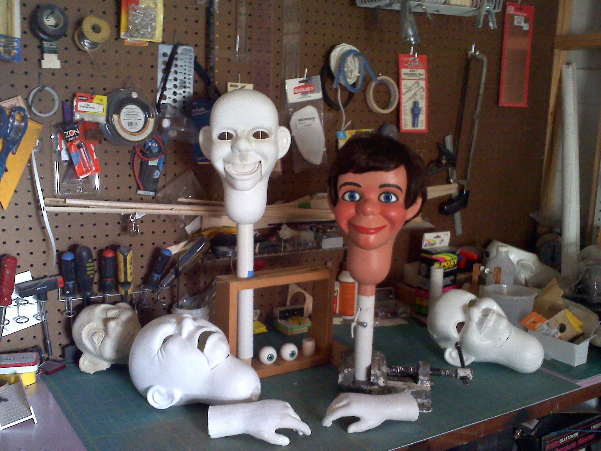
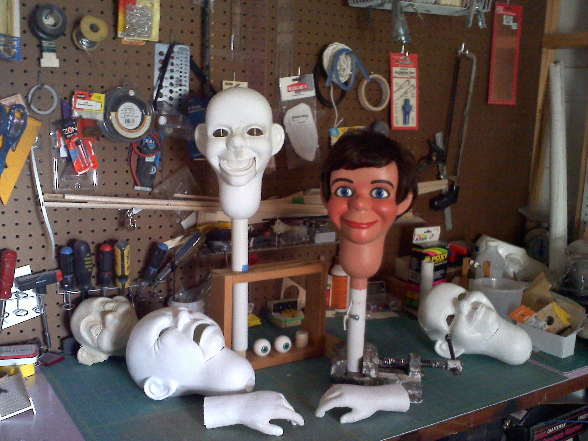

About
The initial edition of The Ventriloquist Summerschool will look at how and why designers speak through their own creations. What can it mean to use own voice, regardless of the arena of action, personally or professionally?
The summer school is open for anyone of any age, studying or working within design, the arts and all other creative fields. Applications are welcomed from all over the world – both from students and professionals. We especially encourage those with an interest in exploring own voice and taking on others, to apply. Luckily, we can invite people to attend, free of charge.
Workshops
Throughout the week four workshops will run parallel, and the participants will be asked to choose one.
Public intervention
“What form can publication, daily broadcast and streaming content take? Where does data collection, localization, reportage and vernacular language fit in? And what about social and cultural intervention, engagement, commentary and forecast?”
One form seen by thousand
“How many eyes can we use to see? And can we speak with several voices at once? The mythical creature Panoptes had thousand eyes that were always awake, until dreary stories made all of them fall asleep.
Do you see the same from different points? Does altering the frame that hold the pieces together, make the pieces change? What does the choices we make when choosing tell us about how we see ourselves?”
To interview a landscape
“What is there to be asked to one’s surroundings? What elements belong in this conversation? What makes work regional? What makes work universal? What voices do things have?”
Articulations
“It’s remarkable how we can so seamlessly switch between different facades, modes of speech, different tones and moods. Theatre and theatricality don’t belong to the stage and screen only. Stories are imprinted daily into the memories of people, crossing the threshold of make-believe and entering the world of maybe-facts and maybe-figures. To this extent, we can all be considered actors putting on routine performances over and over again. Needless to say, this has to be delivered with much conviction and confidence, to the level of mastery of the theatrical performance.”
Tutors
Each workshop will be lead by one of the tutors. During the week guest tutors will come in to talk about their practice and what ventriloquism can be in their profession.
Kristian Henson (1981) is a New York based designer and publisher. After receiving his MFA from Yale School of Art in 2012, he continued his research and extended his design practice by actively collaborating with artists and institutions in The Philippines. He holds the position of Art Director for The Manila Review, a Filipino literary criticism and arts journal. In 2013, he co-founded Hardworking Goodlooking, a publishing imprint and studio that consolidates the experiments of The Head of Design for The Office of Culture and Design. His publishing work has been exhibited at The New Museum, NY Art Book Fair, Printed Matter, Ooga Booga, PrintRoom Rotterdam, Yale University Art Gallery, Asia-Pacific Photobook Archive Melborne, OBSCURA Festival Malaysia, Ateneo University Press and The Singapore Art Museum.
Laura Pappa (1988) is a freelance graphic designer based in Amsterdam. She has graduated from the Estonian Academy of Arts in Tallinn, Gerrit Rietveld Academie in Amsterdam and Werkplaats Typografie in Arnhem. Her recent projects include publication series ‘Exercises in Practical Mischievery’ (Speculative Press) on different, often historical, protagonists in the creation of alternative forms of communication. Her work explores the realm of expression and self-presentation as effective tools to direct different aspects of the everyday life. Laura is the coordinator of the Critical Studies masters programme at the Sandberg Instituut in Amsterdam since September 2014.
Kristina Ketola Bore (1986) holds an MA in Design Writing Criticism from London College of Communication. Working as a design writer and critic, editor and partner in the publishing house Particular Facts, she deals with issues around criticality, policies in form, and re-contextualisation. She curated the exhibition A Form for History on a local typography archive and has continued to work with issues around repurposing objects. Some of the places she has lectured include Bergen Academy of the Arts, NTNU and the Estonian Academy of the Arts. She also runs the course for graphic design history and theory at Oslo National Academy of the Arts.
João Doria (1982) is a Brazilian graphic designer based in Oslo, Norway. With a special interest in how many things a single thing can be, he explores via diverse media the creation of simple and meaningless systems intended to communicate through multiple events, discussing where the structure ends and the meaning begins. He has done so in commissioned and self-initiated projects with awards and recognition in countries such as Brazil, Germany, Norway and the United States. He has served, respectively, as a teaching assistant, guest lecturer and advisor at Yale University (US), University of Wisconsin-Stout (US), PUC-Rio (BR), Oslo National Academy of The Arts and Westerdals ACT (NO). Recently he exhibited his work at the Independent Publishing Fair "It's a Book", organized by the HGB-Leipzig.
Apply Now!
Call for registrations for the summer school will go up on the 1st of April.
Until then - get in touch if you have something to say: hello@ventriloqui.st
Colophon
The Ventriloquist Summerschool was selected as one of 2015 Grafillstipend-Stor recipient projects, and is funded by the same institution.
Concept and organization
João Doria and Kristina Ketola Bore
Sponsors
Arctic Paper